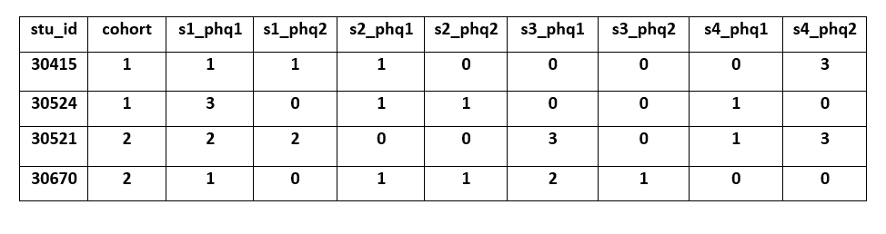
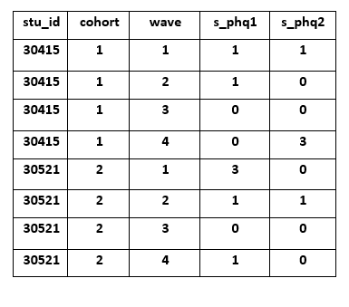

You can view slides from this talk here
A style guide is such an integral piece to data management, I am giving it its own section! We will cover best practices for file structures, file naming and versioning, variable naming, and value coding. Whatever rules you put in place, make sure they are written down, stored somewhere that is accessible to the entire team (for example a team wiki or a README) and that all staff are trained to follow the style guide protocols. I highly recommend applying this style guide across all projects and therefore putting this style guide in a team folder. If there is any style that is specific to a certain project, you will want to place that style guide at the top of a project folder in a README or on a project wiki.
Reasons a style guide is imperative include:
As I mentioned in training 2, how you set up your directory structure is based on your preferences. However, it is important to get that structure written out in a style guide so that everyone is following the same rules within and across projects.
Useful guidelines for setting up directory structure include:
_ or - to separate words
within the same piece of metadataAn example style guide for your directory structure might look like this:
- to separate wordsHere is an example of a directory structure that would be created based on that style guide:
levelName
1 project-new
2 ¦--README_style-guide.txt
3 ¦--intervention
4 ¦ °--cohort-1
5 ¦ °--coaching_materials
6 ¦ ¦--README_versioning.txt
7 ¦ °--archive
8 ¦--project-mgmt
9 ¦ °--cohort-1
10 ¦ °--scheduling-materials
11 ¦ ¦--README_versioning.txt
12 ¦ °--archive
13 ¦--documentation
14 ¦ ¦--protocols
15 ¦ ¦ ¦--README_versioning.txt
16 ¦ ¦ °--archive
17 ¦ ¦--data-dictionary
18 ¦ ¦ ¦--README_versioning.txt
19 ¦ ¦ °--archive
20 ¦ ¦--codebook
21 ¦ ¦ ¦--README_versioning.txt
22 ¦ ¦ °--archive
23 ¦ °--cohort-1
24 ¦ ¦--student_measures
25 ¦ ¦ ¦--README_versioning.txt
26 ¦ ¦ °--archive
27 ¦ °--teacher_measures
28 ¦ ¦--README_versioning.txt
29 ¦ °--archive
30 ¦--data
31 ¦ °--cohort-1
32 ¦ °--student
33 ¦ ¦--raw
34 ¦ ¦ ¦--README_versioning.txt
35 ¦ ¦ °--archive
36 ¦ ¦--syntax
37 ¦ ¦ ¦--README_versioning.txt
38 ¦ ¦ °--archive
39 ¦ °--clean
40 ¦ ¦--README_versioning.txt
41 ¦ °--archive
42 °--tracking
43 °--cohort-1
44 ¦--participant-database
45 ¦ ¦--README_versioning.txt
46 ¦ °--archive
47 °--parent_consents Quick thought: Versioning Documents
Some sort of versioning is absolutely necessary to track changes in your documents throughout the life cycle of your project. If you use a platform that has versioning (ex: Git, SharePoint, Box), which I highly recommend, then you do not need to add the versioning README files to your folders or create archive folders. Through versioning software, you can save over previous versions of files, without having to add an extension such as v01, v02. And when you save over previous versions, the platform tracks the date, allows you to comment on the changes made from your previous version, and at any time, you can view previous versions of the document, review comments from those versions and even retrieve previous versions. If, however, your team does not use versioning software, adding extensions to file names and READMEs to file folders is a viable alternative.
A few important pieces of information before moving on:
Resources:
📑 Sofware
Carpentry
📑 CESSDA
📑 Helsinki
University Library
📑 Teague
Henry
📑 BIDS
📑 Stanford
Medical
📑 Danielle
Navarro
📑 Project TIER
(Teaching Integrity in Empirical Research) provides a protocol as
well as a template for organizing your files for data processing and
analysis
If you are like me, or most of humanity, you are guilty of naming
files something like research report final.docx and
research report final-2.docx and
research report-2-dan edits.docx. It happens, but as you
can see this can makes it very confusing to know any details about what
these documents are? What is this research report on? What is the actual
final version? When were the edits made on these documents? What are the
differences between these documents?
This is why adding file naming to your style guide is so important. It sets the protocol for you and your entire team to use standardized, descriptive, organized, and ultimately human and machine-readable file names to remove any future confusion.
General file naming conventions to follow include:
_ between metadata (different chunks) and
- within metadata (different words that are part of the
same chunk). This not only helps to make the name human readable but
also allows your computer to read and search files easier.\ in dates. Format dates in one of two ways
(pick one and add it to the style guide):
Example file naming style guide:
_ between metadata and - to separate
words within metadata01_dsc_c1_stu_svy_cleaning-syntax_2021-01-22.R01_dsc_c1_stu_svy_cleaning-syntax_2021-01-22v02.Rdsc_stu_svy_protocol_2020-10-01.docxdsc_c1_tch_svy_raw-download_2020-08-03.csvResources:
📑 Stanford
Libraries
📑 Washington
University in St. Louis Libraries
📑 Caltech
Library
📑 Jenny
Bryan
📑 Teague
Henry
📑 Danielle
Navarro
Variable naming protocol should be created early in the project and added to your style guide. You will need this protocol in place to start creating your data dictionary.
There are many best practices and considerations around variable naming.
if,
for, repeat) or functions used in any
programming language
_)
- is not allowed in programs such as R and SPSS as it
can be mistaken for a minus sign. is allowed in R and SPSS it is not allowed in
Stata so it’s best to just avoid using itIn addition to best practices, here are other practices that I’ve noticed others implement. You can pick and choose what works best for your team. Just make sure whatever you choose, you put it in your style guide and follow those guidelines all throughout your project.
Some people like to include question ordering in the variable name (personally I’d rather simply keep this information in my data dictionary and not in my actual variable name). Also, this can get complicated if for any reason you add questions to measures and question order changes.
Some people like to include an indication of the measure in the variable name so you always know what instrument the item came from
Last, time is probably the trickiest variable to account for and also the least uniform (in terms of consistency) that I’ve seen across teams/projects. I think people account for time in many different ways and call it many different things. My general note is, whatever you choose, just make sure it is documented very clearly for your team and outsiders to understand. With that said, I am going to give time it’s own section below.
📑 Tara Reynolds and Christopher Schatschnieder have some great recommendations of variable naming as well.
Quick thought: Versioning Variables
We’ve discussed keeping tracks of different versions of documents. But what if the wording or response options for an item/variable substantively change during the project, after you have collected data? Make a rule for variable versioning.
If your data is longitudinal, consider time in your variable naming conventions as well.
Depending on how you plan to merge your data, there are two different ways to account for time.
Concatenate time to your variables. You do this if you plan to merge your data across time in wide format. Every participant/case occurs once in your data and all data collected for that participant is in that one row.
Create time variables and add them to your data. You do this if you plan to append your data over time in long format. Every participant/case occurs multiple times in your data, once for each period/wave of data collection.
You do not need to have this decided right at the beginning of your
project. You really don’t even need to decide how to account for time
until you are ready to start merging data across time. Until then, most
likely you will have each dataset stored separately per wave and you
will know when each piece of data is collected by how you name that file
(ex: projecta_w1_stu_survey.csv).
When it comes time to start merging your data (maybe you need the first year of data merged to analyze for a funding report), then you will need to make some decisions about how you want to merge your data. The great thing is, if you choose one method and then decide you need your data in the other format later on, it is very easy to switch back and forth through restructuring your data in a statistical program like R or Stata. We will cover this more in a later training.
Consider a hypothetical, longitudinal randomized controlled trial
You collect data on two cohorts of students and you follow each cohort for two years. Your first cohort of students is recruited in 2018-19 and the second cohort of students is recruited 2020-21. You follow each cohort for 4 waves of data collection. Two waves occur in the fall and spring of the first year, and two waves occur in the fall and spring of the follow-up year.

📑 The National Center for Education Statistics has a great example of creating time prefixes for variables in their ECLS-K:2011 documentation on page 7-3.

My examples are by no means, the only way to account for time. You really can account for it however it makes sense for your project and team. For example you may use years and seasons (f18,s19,f19,s20) rather than numeric waves (1,2,3,4). As I mentioned early, just make sure to document it thoroughly so that future users know how to interpret time in your data. No matter what though, formatting for time variable names also needs to also go into your style guide. So if you decide to concatenate time to your variable names, in your style guide you will need to make a rule about this (ex: always add time as a prefix, always separate time by an underscore, etc.).
Additional reading on variable naming:
📑 IPA:
Best Practices
📑 Advanced R
📑 Karl
Broman
Quick thought: Add variable naming to documentation
At the end of any project, you will need to add relevant style guide rules to your final documentation (ex: your codebook) so that when you share your data, others know how to interpret your variable names.
Here is an example of how you would explain your variable naming in your documentation if you are merging data in wide format:
All variable names are made up of the following 4
components:
1. measure (s=student survey, t=teacher survey, o=teacher
observation)
2. data collection wave (1=fall, 2=winter, 3=spring)
3. variable/scale name
4. variable/scale #
Sample: s2_toca4 = student survey-winter-toca scale-item4
Similar to variable naming, variable value protocol also needs to be documented early on and standardized within and across projects. Here are some conventions to follow:
Example of missing codes used by NCES:
Additional reading on value coding:
📑 Jessica
Logan, Ph.D.
📑 Data
One
📑 Karl
Broman
A style guide can include many other components besides just the four I covered here. For example, in this excellent example of a style guide, created and used by the Harvard Strategic Data Project, they cover folder structure, file naming, and variable naming, as well as rules for commenting code, general coding guidelines and commonly used and accepted abbreviations. You can include anything you want in your style guide that helps you streamline the look, usability, and searchability of your files and data.